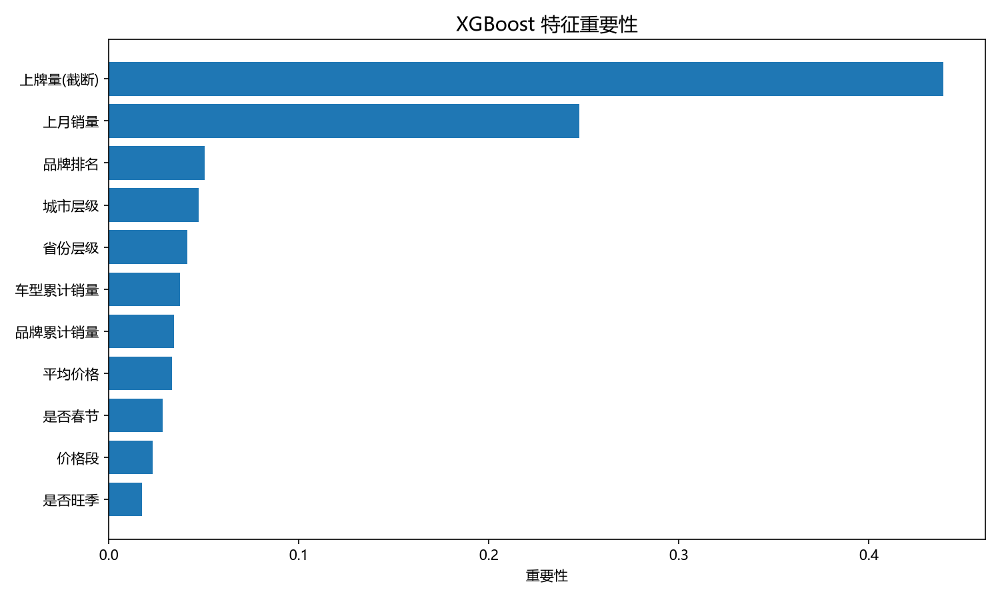
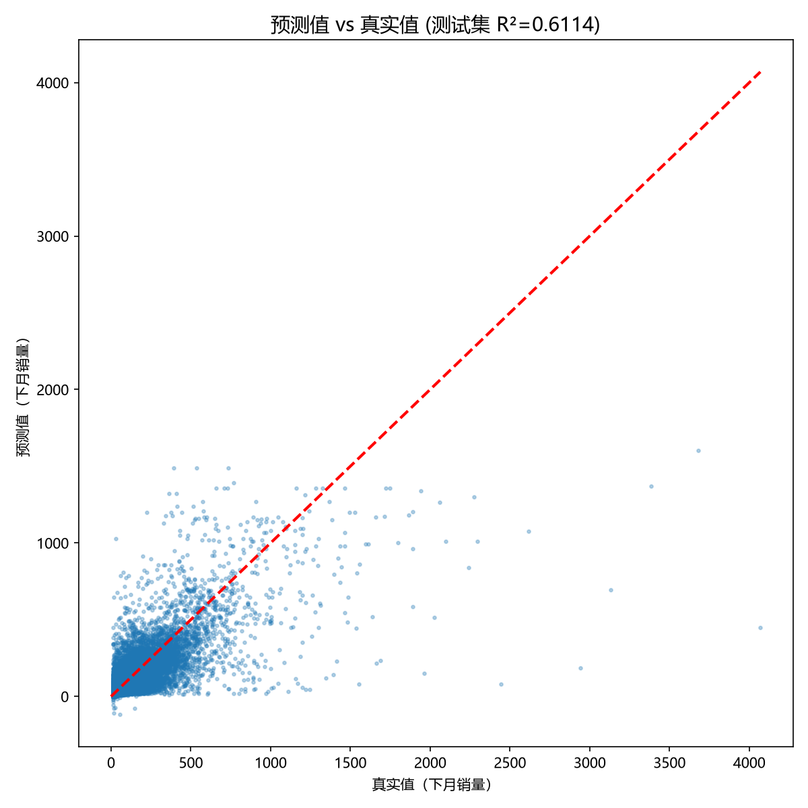

| 排名 | 特征名称 | 重要性 | 业务含义解读 |
|---|---|---|---|
| 1 | 上牌量(截断) | 0.439 | 🥇 核心因素：当前/历史上的卖车成绩。 |
| 2 | 上月销量 | 0.248 | 🥈 核心因素：上个月卖得好，下个月通常也好。 |
| 3 | 品牌排名 | 0.05 | 🥉 大品牌自带流量，销量更有保障。 |
| 4 | 城市层级 | 0.047 | 一二线城市新能源车接受度更高。 |
| 5 | 省份层级 | 0.041 | 所在省份的整体经济水平影响销量。 |
| 6 | 车型累计销量 | 0.038 | 该车型历史上的总销量沉淀。 |
| 7 | 品牌累计销量 | 0.034 | 该品牌历史上的总销量沉淀。 |
| 8 | 平均价格 | 0.033 | 车辆定价区间对销量的影响。 |
| 9 | 是否春节 | 0.028 | 春节假期对门店交车的影响。 |
| 10 | 价格段 | 0.023 | 10-15万等价格区间的定位影响。 |
| 11 | 是否旺季 | 0.017 | 常规旺季对销量的拉动(影响最小)。 |

